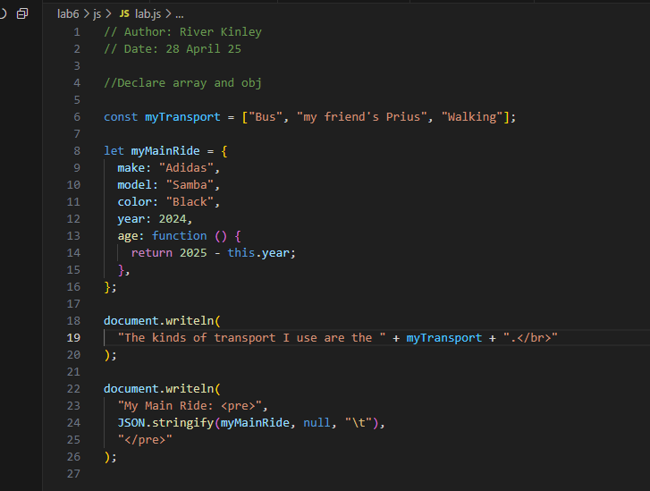

Challenge
For this lab, we first tested some javascript in the console.
We then imported these values into a .js file to use for this page!
Problems
I had to format the whitespace in javascript to get it to look right.
Results
Here is the printed .js code.